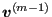

Keyword type: step
This card is used within a step in which the *MODAL DYNAMIC or *STEADY STATE DYNAMICS procedure has been selected. There are two optional, mutually exclusive parameters: RAYLEIGH and MODAL=DIRECT (default).
If MODAL=DIRECT is selected the user can specify the viscous damping factor  for each mode separately. This is the default. Direct damping is not allowed in combination with nonzero single point constraints.
for each mode separately. This is the default. Direct damping is not allowed in combination with nonzero single point constraints.
If RAYLEIGH is selected Rayleigh damping is applied in a global way, i.e. the damping matrix  is taken to be a linear combination of the stiffness matrix
is taken to be a linear combination of the stiffness matrix  and the mass matrix
and the mass matrix  :
:
| (492) |
The coefficients apply to all modes. The corresponding viscous damping factor  for mode j amounts to:
for mode j amounts to:
|  | (493) |
Consequently,  damps the low frequencies,
damps the low frequencies,  damps the high frequencies.
damps the high frequencies.
The *MODAL DAMPING keyword can be used in any step to redefine damping values defined in a previous step.
First line:
Second line if MODAL=DIRECT is selected (or, since this is default, if no additional parameter is entered):
Second line if RAYLEIGH is selected:
Example: *MODAL DAMPING,RAYLEIGH ,,0.,2.e-4
indicates that the damping matrix is obtained by multiplying the stiffness matrix with 
Example files: beamdy3, beamdy4, beamdy5, beamdy6.